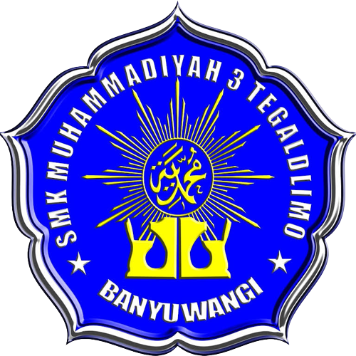

Di tengah pergolakan zaman penjajahan dan kebangkitan pemikiran keislaman di awal abad ke-20, lahirlah sebuah gerakan pembaruan Islam yang kelak memberi pengaruh besar bagi masyarakat Indonesia. Gerakan itu bernama Muhammadiyah, didirikan oleh KH Ahmad Dahlan pada tanggal 18 November 1912 di kota Yogyakarta. Latar belakang pendirian organisasi ini berakar dari keprihatinan Ahmad Dahlan terhadap praktik keagamaan masyarakat yang banyak dipengaruhi oleh takhayul, bid'ah, dan khurafat, serta lemahnya pendidikan umat Islam saat itu. KH Ahmad Dahlan adalah seorang ulama pembaru yang berpikiran maju. Ia belajar agama tak hanya di Indonesia, tetapi juga di Mekkah. Sepulang dari sana, ia membawa gagasan untuk memurnikan ajaran Islam berdasarkan Al-Qur’an dan Sunnah, serta menyesuaikan cara berdakwah dan pendidikan dengan kemajuan zaman. Ia percaya bahwa Islam adalah agama yang rasional, mendorong ilmu pengetahuan, dan harus membawa kemajuan dalam kehidupan umat. Muhammadiyah didirikan bukan sebagai partai politik, melainkan sebagai organisasi sosial-keagamaan yang fokus pada pendidikan, dakwah, dan pelayanan masyarakat. Salah satu langkah awal yang dilakukan adalah mendirikan sekolah-sekolah modern berbasis Islam, yang pada masa itu sangat langka. Sekolah Muhammadiyah tidak hanya mengajarkan agama, tetapi juga ilmu pengetahuan umum, kedisiplinan, dan nilai-nilai moral. Inilah cikal bakal sistem pendidikan Islam modern di Indonesia. Selain pendidikan, Muhammadiyah juga aktif dalam bidang kesehatan dan sosial. Mereka mendirikan rumah sakit, panti asuhan, dan berbagai lembaga amal yang membantu masyarakat tanpa membedakan latar belakang. Semangat "beramal dan berilmu" menjadi ciri khas gerakan ini. Organisasi ini berkembang cepat ke berbagai daerah di Indonesia, membawa semangat pembaruan dan pemberdayaan umat. Hingga kini, Muhammadiyah menjadi salah satu organisasi Islam terbesar di Indonesia, dengan jutaan anggota dan ribuan amal usaha di bidang pendidikan, kesehatan, dan sosial. Meski telah melewati lebih dari satu abad, semangat awal KH Ahmad Dahlan tetap hidup dalam setiap gerak langkah Muhammadiyah: menegakkan tauhid, memajukan umat, dan membangun Indonesia melalui amal nyata yang berlandaskan iman.